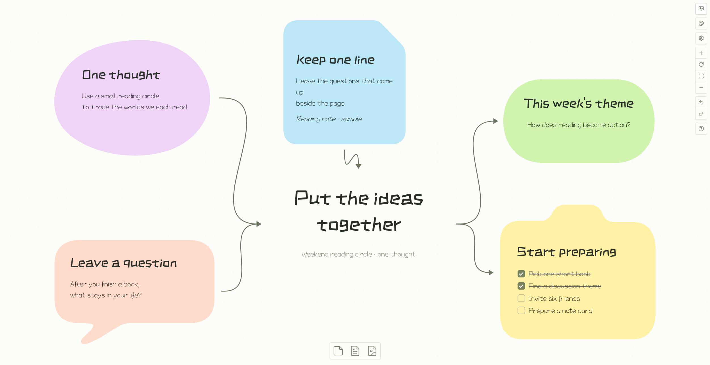
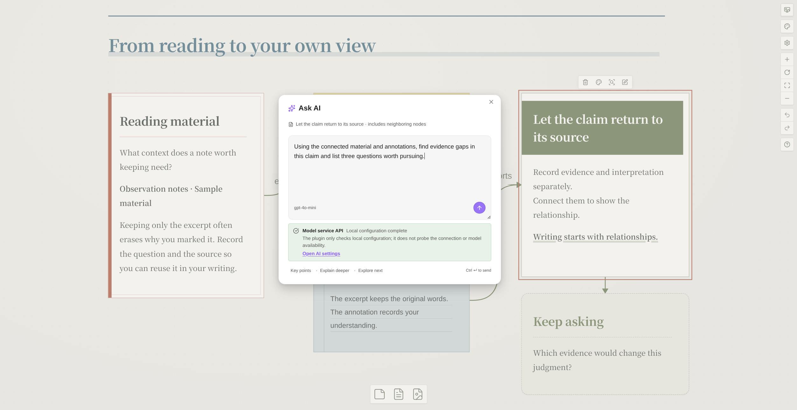
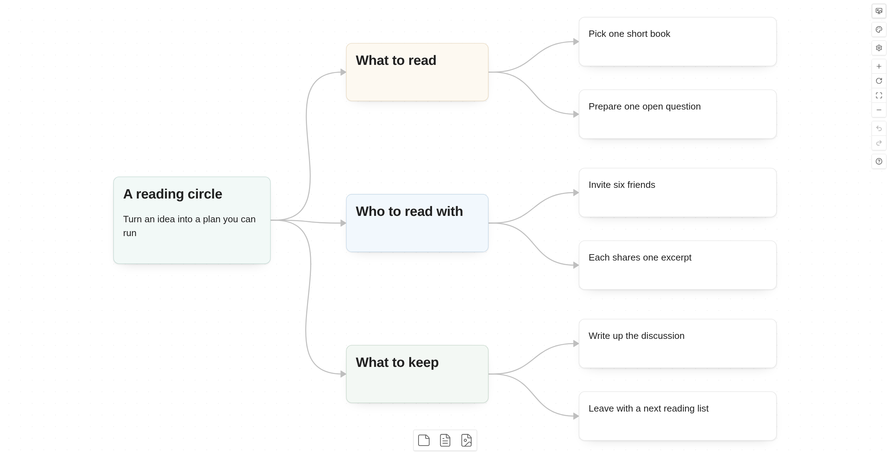

Free and open source · Runs inside Obsidian
An Obsidian
Canvas plugin.
Better Canvas adds AI assistance, mind maps, and six themes to Obsidian's built-in Canvas. Install and enable the plugin, then use these features directly on your canvas in Obsidian.
Requires desktop Obsidian 1.14.4 or newer

Keep the answer
next to the question.
Select one card or a group in Obsidian Canvas and ask AI with your existing context. Answers become new nodes connected to their sources, so every follow-up has somewhere to start.


Start with what you know
Summarize sources, compare viewpoints, and expand an idea. Watch answers stream in, stop, or regenerate.
Give understanding a structure
Generate a mind map or learning flashcards. Export a Markdown deck for Spaced Repetition.
Choose your own model
Use OpenAI-compatible APIs, Anthropic, or Gemini. Connect installed, signed-in local agents such as Codex and OpenCode.
AI is optional and needs your configuration. Services may charge for usage. Prompts and related context go to your chosen service; local agents may also call remote models. Editing, mapping, and themes work without AI.
A new thought.
Another branch.
Build mind maps on Obsidian's native canvas. Create children and siblings from the keyboard, arrange branches in four directions, or start a map from the H1 headings in a Markdown note.


- Tab
- Create a child
- Enter
- Create a sibling
- Alt + arrow
- Select a nearby node
- Left / right / up / down
- Four layout directions
While editing text, use Shift + Tab / Shift + Enter to create nodes. Shortcut groups can be disabled in settings.
Same ideas.
A different expression.
Give each Obsidian canvas its own theme. Loose ideas, reading notes, process maps, or sketches: choose a look that fits while keeping your text, positions, and connections.


Real plugin screenshots. Theme choices save with the canvas; node styles can be applied to several selected cards at once.
Keep going after the map.
Read and annotatePin PDF pages, extract quotations, and mark them with a pen or highlighter.
Share your thinkingPresent a canvas, or export PNG, SVG, and JSON Canvas.
Stay connectedBring more notes together with node links, backlinks, and Canvas Portals.
Static exports can differ from the editor. Scrapbook paper textures and tape are not reproduced in whole-canvas or selection static exports. Known limitations
Your next canvas
starts here.
In Obsidian, open Settings → Community plugins. Search for Better Canvas, install it, and enable it.
Desktop only. Requires Obsidian 1.14.4 or newer.
Prefer a manual install?
Download better-canvas.zip from GitHub Releases, extract it into your vault's .obsidian/plugins/ folder, then enable it in Obsidian.
Download latest releaseInstallation instructions